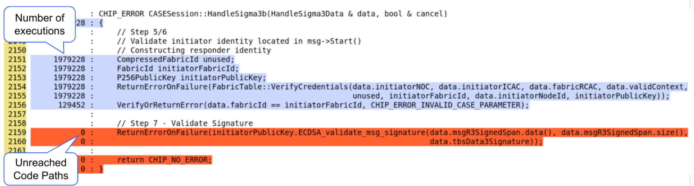
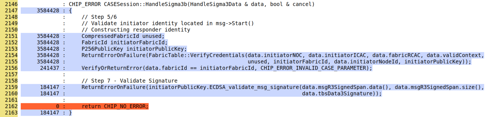

Fuzz testing#
Fuzz Testing involves providing random and unexpected data as input to functions and methods to uncover bugs, security vulnerabilities, or to determine if the software crashes.
it is often continuous; the function under test is called in iteration with thousands of different inputs.
Fuzz testing is often done with sanitizers enabled; to catch memory errors and undefined behavior.
The most commonly used fuzz testing frameworks for C/C++ are libFuzzer and AFL.
Google’s FuzzTest is a newer framework that simplifies writing fuzz tests with user-friendly APIs and offers more control over input generation. It also integrates seamlessly with Google Test (GTest).
Fuzz testing with libFuzzer#
The following example demonstrates how to use libFuzzer to write a simple fuzz
test. Each fuzzer function is defined using
LLVMFuzzerTestOneInput(const uint8_t * data, size_t len).
The Fuzzer must be located in a Test Folder : src/some_directory/tests/
#include <cstddef>
#include <cstdint>
/**
* @file
* This file describes a Fuzzer for ...
*/
extern "C" int LLVMFuzzerTestOneInput(const uint8_t * data, size_t len)
{
// Instantiate values as needed
// Call target function for the fuzzer with the fuzzing input (data and len)
return 0;
}
See FuzzBase38Decode.cpp for an example of a simple fuzz test.
Compiling and running#
Add to
src/some_directory/tests/BUILD.gnExample
import("${chip_root}/build/chip/fuzz_test.gni") if (enable_fuzz_test_targets) { chip_fuzz_target("FuzzTargetName1") { sources = [ "Fuzzer1.cpp" ] public_deps = [ // Dependencies go here. ] } chip_fuzz_target("FuzzTargetName2") { sources = [ "Fuzzer2.cpp" ] public_deps = [ // Dependencies go here. ] } }
CHIP_FUZZ_TARGET : the name of the fuzz target
SOURCES : file in the test folder containing the fuzzer implementation
PUBLIC_DEPS : Code Dependencies needed to build fuzzer
Another example: src/setup_payload/tests/BUILD.gn
Add to
${chip_root}/BUILD.gnAdd the Fuzzing Target in this part of the code : ${chip_root}/BUILD.gn
Add Fuzzing Target like that
if (enable_fuzz_test_targets) { group("fuzz_tests") { deps = [ "${chip_root}/src/credentials/tests:fuzz-chip-cert", "${chip_root}/src/lib/core/tests:fuzz-tlv-reader", "${chip_root}/src/lib/dnssd/minimal_mdns/tests:fuzz-minmdns-packet-parsing", "${chip_root}/src/lib/format/tests:fuzz-payload-decoder", "${chip_root}/src/setup_payload/tests:fuzz-setup-payload-base38", "${chip_root}/src/setup_payload/tests:fuzz-setup-payload-base38-decode", // ADD HERE YOUR FUZZING TARGET "${chip_root}/some_directory/tests:FuzzTargetName" ] } }
Build all fuzzers
./scripts/build/build_examples.py --target <host>-<compiler>-tests-asan-libfuzzer-clang build
e.g.
./scripts/build/build_examples.py --target darwin-arm64-tests-asan-libfuzzer-clang build
** Make sure to put the right host and compiler
Fuzzers binaries are compiled into:
out/<host>-<compiler>-tests-asan-libfuzzer-clang/testse.g.
darwin-arm64-tests-asan-libfuzzer-clang
Running the fuzzer with a corpus
path_to_fuzzer_in_test_folder path_to_corpus
Google's FuzzTest#
Google FuzzTest is integrated through Pigweed pw_fuzzer.
Use cases#
Finding Undefined Behavior with Sanitizers:
Running fuzz tests while checking if a crash or other sanitizer-detected error occurs, allowing detection of subtle memory issues like buffer overflows and use-after-free errors.
Find Correctness Bugs using Assertions:
For example, in Round trip Fuzzing, fuzzed input is encoded, decoded, and then verified to match the original input. An example of this can be found in src/setup_payload/tests/FuzzBase38PW.cpp.
More information can be found in the FuzzTest Use Cases documentation.
Writing FuzzTests#
Keywords: Property Function, Input Domain
FuzzTests are instantiated through the macro call of
FUZZ_TEST:
FUZZ_TEST(TLVReader, FuzzTlvReader).WithDomains(fuzztest::Arbitrary<std::vector<std::uint8_t>>());
The Macro invocation calls the Property Function, which is
FuzzTlvReaderabove.The input domains define the range and type of inputs that the property function will receive during fuzzing, specified using the
.WithDomains()clause.In the macro above, FuzzTest will generate a wide range of possible byte vectors to thoroughly test the
FuzzTlvReaderfunction.
The Property Function#
// The Property Function
void FuzzTlvRead(const std::vector<std::uint8_t> & bytes)
{
TLVReader reader;
reader.Init(bytes.data(), bytes.size());
chip::TLV::Utilities::Iterate(reader, FuzzIterator, nullptr);
}
The Property Functions must return a
voidThe function will be run with many different inputs in the same process, trying to trigger a crash.
It is possible to include Assertions such as during Round-Trip Fuzzing
More Information: https://github.com/google/fuzztest/blob/main/doc/fuzz-test-macro.md#the-property-function
Input Domains#
FuzzTest Offers many Input Domains, all of which are part of the
fuzztest::namespace.All native C++ types can be used through
Arbitrary<T>():
FUZZ_TEST(Base38Decoder, FuzzQRCodeSetupPayloadParser).WithDomains(Arbitrary<std::string>());
using vector domains is one of the most common. It is possible to limit the size of the input vectors (or any container domain) using
.WithMaxSize()or.WithMinSize(), as shown below:
FUZZ_TEST(MinimalmDNS, TxtResponderFuzz).WithDomains(Arbitrary<vector<uint8_t>>().WithMaxSize(254));
ElementOfis particularly useful as it allows us to define a domain by explicitly enumerating the set of values in it and passing it to FuzzTest invocation. Example:
auto AnyProtocolID()
{
return ElementOf({ chip::Protocols::SecureChannel::Id, chip::Protocols::InteractionModel::Id, chip::Protocols::BDX::Id,
chip::Protocols::UserDirectedCommissioning::Id });
}
FUZZ_TEST(PayloadDecoder, RunDecodeFuzz).WithDomains(Arbitrary<std::vector<std::uint8_t>>(), AnyProtocolID(), Arbitrary<uint8_t>());
A detailed reference for input domains can be found here: FuzzTest Domain Reference.
Domain Combinators#
Domain Combinators: Useful when we have input domains that we want use to create another domain; e.g. construct an object and pass it to the property function.
An example is
Mapdocumented in FuzzTest’s official documentation Aggregate Combinators#MapUsing a Map, we can take several input domains, pass them into the mapping function, and get a single Domain as output.
An example from the Stack is
AnyValidationContext()used inFUZZ_TEST(FuzzCASE, HandleSigma3b)
Seeds and Corpus#
Using initial seeds is very useful when fuzzing functions that take complex inputs, such as large byte arrays
The fuzzing engine starts by mutating these initial seeds instead of generating completely random inputs
This helps the fuzzing engine explore more realistic and meaningful code paths faster, making it more likely to uncover issues
Adding
.WithSeeds()to the Input Domains within a FUZZ_TEST Macro invocation allow us to use initial seeds.Two Ways to use
.WithSeeds():Using variables as inputs: Examples of this usage are in
FuzzCASE.cppin the lambdaSeededEncodedSigma1()used in the Fuzz Test CaseFUZZ_TEST(FuzzCASE, ParseSigma1_RawPayload)Using files as inputs with
fuzztest::ReadFilesFromDirectory():Returns a vector of single-element tuples, each containing file content as a string
Use a lambda like
seedProviderinFuzzChipCertPW.cppto unpack the tuples and extract contentsThe lambda should return
std::vector<std::string>to be used withstd::stringdomain as shown below:
FUZZ_TEST(FuzzChipCert, ConvertX509CertToChipCertFuzz).WithDomains(Arbitrary<std::string>().WithSeeds(seedProvider(isDerFile)));
Caution: attach
.WithSeeds()to an input domain inside.WithDomains(...). FuzzTest also allows chaining.WithSeeds()on the FUZZ_TEST registration itself (after.WithDomains(...)), but seeds provided that way are silently dropped in libFuzzer compatibility mode, which is how OSS-Fuzz runs these tests; only domain-attached seeds are delivered there.To give a multi-parameter property function whole-input seeds (tuples that pin all parameters together, e.g. so a message sequence stays paired with the setup that makes it meaningful), wrap all the parameter domains in a single
TupleOf(...)and attach.WithSeeds()to it:.WithDomains()accepts one tuple domain in place of the individual parameter domains. An example from the Stack isFUZZ_TEST(FuzzBdxTransferSessionPW, BdxSessionSequenceDoesNotCrash):FUZZ_TEST(MySuite, MyFuzzTest) .WithDomains(TupleOf(Arbitrary<bool>(), Arbitrary<uint16_t>(), Arbitrary<std::vector<uint8_t>>()) .WithSeeds(WholeInputSeeds()));
Running FuzzTests#
There are several ways to run the tests:
Unit-test mode (where the inputs are only fuzzed for a second):
./fuzz-chip-cert-pw
Continuous fuzzing mode; we need to first list the tests, then specify the FuzzTestCase to run:
$ ./fuzz-chip-cert-pw --list_fuzz_tests
[.] Sanitizer coverage enabled. Counter map size: 11134, Cmp map size: 262144
[*] Fuzz test: ChipCert.ChipCertFuzzer
[*] Fuzz test: ChipCert.DecodeChipCertFuzzer
$ ./fuzz-chip-cert-pw --fuzz=ChipCert.DecodeChipCertFuzzer
Running all Tests in a TestSuite for a specific time, e.g for 10 minutes
# both Fuzz Tests will be run for 10 minutes each
./fuzz-chip-cert-pw --fuzz_for=10m
For Help
# FuzzTest related help
./fuzz-chip-cert-pw --helpfull
# gtest related help
./fuzz-chip-cert-pw --help
Coverage Report Generation#
[!TIP]
Use Coverage Reports to get more insights while writing FuzzTests.
Build FuzzTests with coverage instrumentation Building pw_fuzzer FuzzTests.
Run These FuzzTests using
scripts/tests/run_fuzztest_coverage.pyrun them in
Continuous Fuzzing Modefor as long as possible to get max coverage
The path for the HTML Coverage Report will be output after generation
Coverage Reports and Fuzz Blockers#
Coverage Reports can give (FuzzTest Developers) insights and help identify
Fuzz Blockers.Fuzz Blocker: something that prevents a fuzz test from exploring a certain part of the code.
Example of Fuzz Blocker Analysis:#
Screenshot below shows how we can use a Coverage Report to identify a Fuzz Blocker
We can see the number of executions of each line in the report.
Line (#2159) was not reached, in at least 129,452 executions.
The line (#2156) just above it is possibly a Fuzz Blocker.
The
data.fabricIdcheck is always failing and it is blocking the execution of the function that follows it.

Thus, we can adapt our FuzzTest in a way to be able to pass that check.
Solution: One approach will be to:
Seed the Fuzzed
NOCwith a valid NOC CertificateFuzz the
FabricIdSeed the
FabricIdusing the same validFabricIdincluded in the valid NOC Cert.
After doing this, Screenshot below shows Line #2159 is now reached; We have increased our coverage and we are sure that our FuzzTest is more effective:
This approach was used FuzzTest Case
FUZZ_TEST(FuzzCASE, HandleSigma3b)

FAQ#
What revision should the FuzzTest and Abseil submodules be for running pw_fuzzer with FuzzTest?#
Google FuzzTest is integrated into Matter using
pw_fuzzer, which has several dependencies. These dependencies are listed here: Step 0: Set up FuzzTest for your project.Matter integrates these dependencies as submodules, including Google FuzzTest and Abseil.
Since FuzzTest and Abseil only support the
bazelandCMakebuild systems and do not support GN, Pigweed maintainers use a script to generate GN files for these dependencies.the revision of FuzzTest and Abseil submodules in Matter should match or at least be as new as the specific version (SHA1) used when generating these GN files.
You can find the version used for the generated GN files here: FuzzTest Version and Abseil Version.
TO ADD:#
More Information on Test Fixtures (After issues are resolved)
How to add FuzzTests to the Build System
More Information on OSS-FUZZ